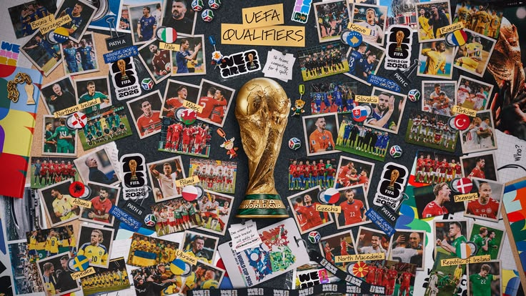

Aquí todas las canciones e himnos oficiales de la Copa Mundial a través de los años

La Copa Mundial se inauguró en 1930, pero no fue hasta 1990 que la Fédération Internationale de Football Association, o FIFA, comenzó a adoptar canciones que se convertirían en la banda sonora oficial del torneo global de fútbol, que se celebra cada cuatro años.
Algunas más populares que otras, estos himnos oficiales no solo han acompañado a las Copas Mundiales, sino que también han transformado las carreras de los artistas que las han interpretado. Tal fue el caso de Ricky Martin, quien en 1998 grabó la eufórica canción oficial “Cup of Life (La Copa de la Vida)” para el torneo que tuvo lugar ese año en Francia.
En el apogeo de la “explosión latina”, con artistas como Martin cruzando al mercado anglo, la estrella puertorriqueña se unió a Desmond Child y Draco Rosa para escribir y producir la canción, que originalmente alcanzó el puesto No. 60 en el Billboard Hot 100 en 1998 y volvió a ingresar en la lista, en el No. 45, en agosto de 1999. El éxito internacional también ganó un Grammy a la mejor interpretación de pop latino.
Otra canción oficial que se convirtió en un fenómeno fue “Waka Waka (This Time for Africa)” de Shakira, con la participación de la banda de afrofusión Freshlyground, para el evento de 2010 celebrado en Sudáfrica. Con más de 4.000 millones de vistas en YouTube hasta la fecha, la canción alcanzó el No. 38 en el Hot 100 el 3 de julio de 2010.
En 2022, la FIFA innovó al lanzar varias canciones oficiales para la Copa Mundial de 2022 en Catar, la primera de las cuales fue la inspiradora “Hayya Hayya (Better Together)”, con Trinidad Cardona, Davido y Aisha. Esta marcó la primera vez en la historia que el torneo tuvo una banda sonora con múltiples canciones, con artistas internacionales que “mostraron diversos géneros musicales que abarcan el mundo, estableciendo el tono para una celebración verdaderamente global”, según la FIFA.
Cuatro años después, la organización continuó con este enfoque al trabajar con artistas como LISA, Jelly Roll, Burna Boy y más para curar otra colección de canciones para la Copa Mundial de 2026 en Norteamérica.
Cabe destacar que las canciones inspiradas en la Copa Mundial se han lanzado desde 1962, pero no todas han sido temas o himnos oficiales.
- 1990 (Italia)
La canción oficial del torneo de fútbol celebrado en Italia en 1990 fue “Un’estate italiana (To Be Number One)”, interpretada por Edoardo Bennato y Gianna Nannini en italiano, y por Giorgio Moroder Project en inglés. - 1994 (Estados Unidos)
La Copa Mundial de 1994 se llevó a cabo en Estados Unidos y tuvo como canción oficial “Gloryland”. Este tema lleno de soul, impulsado por el sonido del saxofón, fue interpretado por el músico de rock, R&B y soul Daryl Hall, junto con el conjunto vocal e instrumental Sounds of Blackness. - 1998 (Francia)
la Copa Mundial de la FIFA de 1998, celebrada en Francia, la FIFA lanzó una canción oficial y un himno oficial. El himno oficial fue interpretado por Youssou N’Dour y Axelle Red, titulado “La Cour des Grands (Do You Mind If I Play)”; mientras que la canción oficial fue “La Copa de la Vida (Cup of Life)” de Ricky Martin, grabada tanto en inglés como en español. El tema de Martin, que marcó un momento decisivo en su carrera, ganó el Grammy a la mejor interpretación de pop latino. - 2002 (Corea del Sur y Japón)
Para el torneo celebrado en Corea del Sur y Japón, la FIFA nombró “Let’s Get Together“, interpretada por varios artistas locales, como la canción oficial local del torneo. La canción oficial de 2002 fue “Boom” de la artista de música dance Anastacia, y el himno oficial fue “Anthem” de Vangelis. - 2006 (Alemania)
La Copa Mundial de 2006 se llevó a cabo en Alemania y tuvo como canción oficial “The Time of Our Lives” de Il Divo y Toni Braxton, y como himno oficial “Zeit dass sich was dreht (Celebrate The Day)” de Herbert Grönemeyer con Amadou & Mariam. - 2010 (Sudáfrica)
El Mundial de 2010 en Sudáfrica tuvo tres temas oficiales que marcaron el torneo: la canción oficial, la canción oficial de la mascota y el himno oficial. La canción oficial fue “Waka Waka (This Time For Africa)”, grabada en español e inglés por la estrella colombiana Shakira junto a Freshlyground. La canción oficial de la mascota fue “Game On” de Pitbull, TKZee y Dario G, y el himno oficial fue “Sign of a Victory”, interpretado por R. Kelly junto a los Soweto Spiritual Singers. - 2014 (Brasil)
En 2014, Pitbull, Jennifer Lopez y la estrella brasileña Claudia Leitte se unieron para crear la canción oficial trilingüe (inglés, español y portugués) con ritmo de samba “Ole Ola (We Are One)”. La canción oficial de la mascota, “Tatu Bom de Bola”, fue interpretada en portugués por Arlindo Cruz, mientras que el himno oficial fue “Dar um Jeito (We Will Find a Way)” de Carlos Santana con Wyclef, Avicii y Alexandre Pires. - 2018 (Rusia)
Para la Copa Mundial de la FIFA 2018 celebrada en Rusia, se lanzó únicamente una canción oficial titulada “Live It Up“, de Nicky Jam con la colaboración de Will Smith y Era Istrefi, la cual fue interpretada durante la ceremonia de clausura del torneo. La canción fue grabada en español y en inglés. - 2022 (Qatar)
La primera canción oficial que la FIFA lanzó para la Copa del Mundo 2022 en Qatar fue “Hayya Hayya (Better Together)”, una pista inspiradora con Trinidad Cardona, Davido y Aisha que fusionó influencias de R&B y reggae. La banda sonora se expandió más tarde con “Tukoh Taka” de Nicki Minaj, Maluma y Myriam Fares; “Arhbo” de Ozuna, Gims y RedOne; así como “Light the Sky” de Balqees, Nora Fatehi, Rahma Riad y Manal y “Dreamers” de Jung Kook de BTS. - 2026 (Estados Unidos, Canadá y México)
La banda sonora de la Copa Mundial 2026, que se llevará a cabo conjuntamente en Estados Unidos, México y Canadá, incluye “Lighter” de Jelly Roll y Carín León, “Por ella” de Los Ángeles Azules y Belinda, y “Echo” de Daddy Yankee y Shenseea. Además, Jessie Reyez y Elyanna contribuyeron con “Illuminate,” LISA, Anitta y Rema se unieron en “Goals,” y Shakira regresó para una segunda ronda con una colaboración junto a Burna Boy titulada “Dai Dai”.